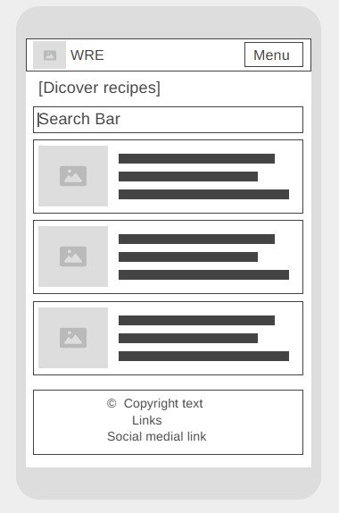
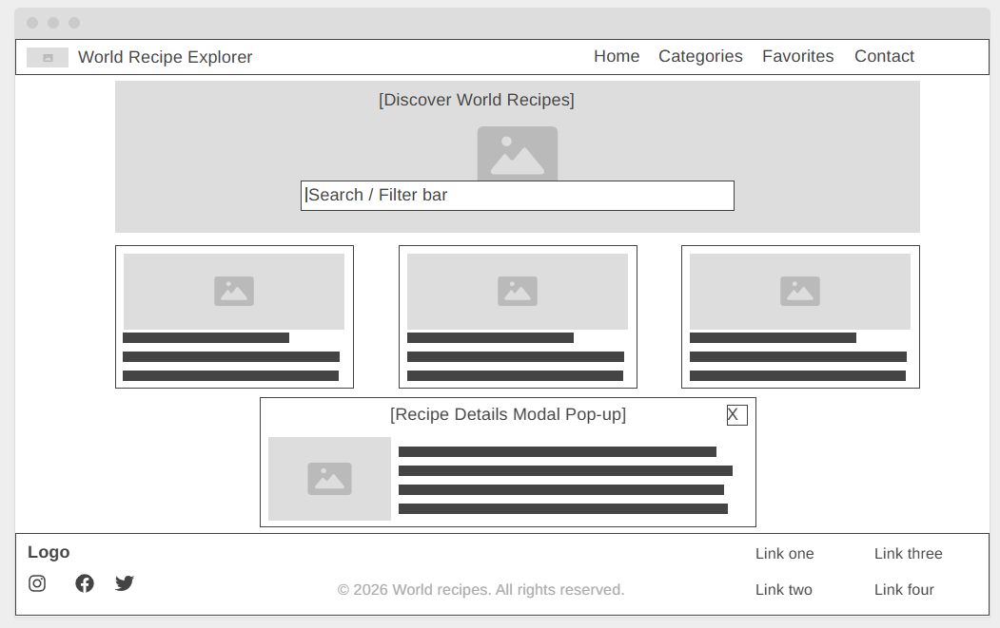

Site Name
Name: World Recipe Explorer
Reason for selection: This name clearly communicates the core purpose of the website - allowing users to journey across the globe through culinary arts, discovering, exploring, and cooking authentic international dishes.
Site Purpose
The World Recipe Explorer serves as a digital hub for food enthusiasts, home cooks, and cultural explorers. The site provides:
- An interactive catalog of meals categorized by global regions and food types using external API integration.
- Comprehensive search and filtering capabilities to find recipes quickly.
- Detailed modal popups showing ingredients, measurements, and step-by-step instructions.
- A personalized favorites collection saved directly in browser local storage.
- A contact/feedback form for users to submit recipe suggestions or inquiries.
Scenarios
Target audience questions that drive the content and functionality of the website:
- How can I quickly find a traditional Italian dinner recipe using specific ingredients?
- Where can I save my favorite international recipes so I don't lose them when I close my browser?
Color Scheme
The color palette is inspired by warm spices and professional culinary branding, promoting appetite, warmth, and clean readability.
Used for headers, buttons, and accent borders
Used for navigation, footer, and major headings
Used for highlights, ratings, and active states
Typography
The site uses a clean pairing of a high-end serif for titles and a highly legible sans-serif for body content.
- Heading Font: 'Playfair Display', serif (Applied to main headers, site titles, and section headings).
- Body Font: 'Source Sans 3', sans-serif (Applied to paragraphs, navigation items, form inputs, and general body text).
Wireframes
Structural layout sketches outlining the homepage design for mobile and desktop viewports.
Mobile View

Desktop View
